Mari Gomes · Massagem em Amsterdã
Segunda-feira, 16 de novembro de 2026
"O site não tem onde deixar uma avaliação."
No fim da seção de depoimentos da página inicial e das 6 páginas de massagem (inglês e holandês) entrou um botão que abre direto a janela "Escrever avaliação" do seu perfil no Google. Ninguém precisa procurar.
Página inicial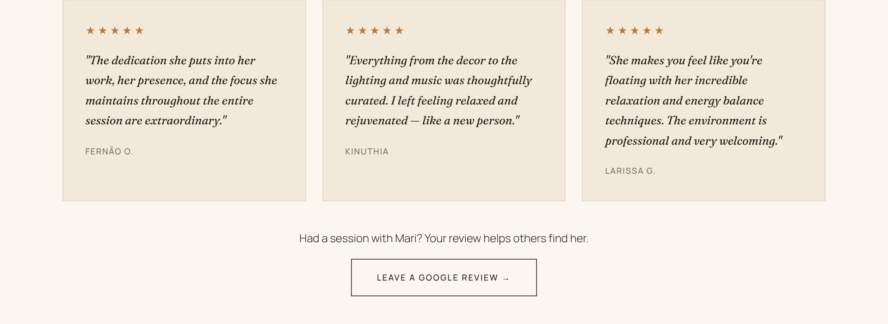
Página de relaxamento, em holandês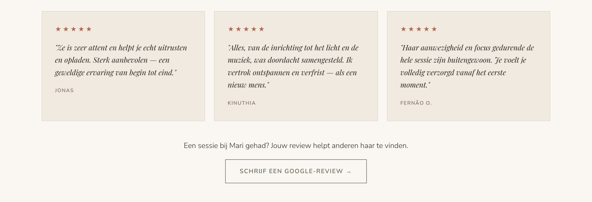
Dica: você pode mandar este mesmo link para o cliente pelo WhatsApp logo depois da sessão. É o jeito mais fácil de conseguir a avaliação:
https://g.page/r/CXcoLkESvwsfEAE/review
"Tira essas informações de atendimento em domicílio."
Tiramos dos dois pontos que você marcou no print (as perguntas sobre preço e sobre onde a sessão acontece) e também da nota abaixo dos preços. Valeu para as 6 páginas de massagem e para a página inicial, preços e tratamentos do site. Aproveitamos para deixar o pagamento só cartão ou dinheiro: o "BTC" saiu de todas as páginas. Exemplo na página Energy, em inglês:
Antes · nota dos preços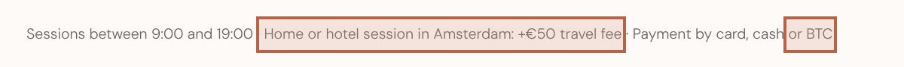
Depois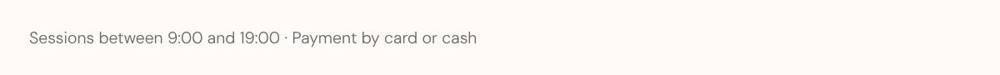
Antes · perguntas frequentes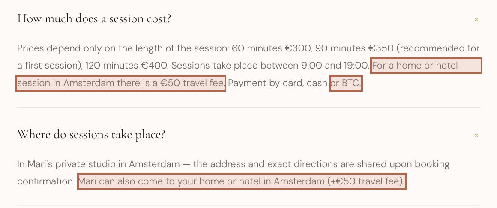
Depois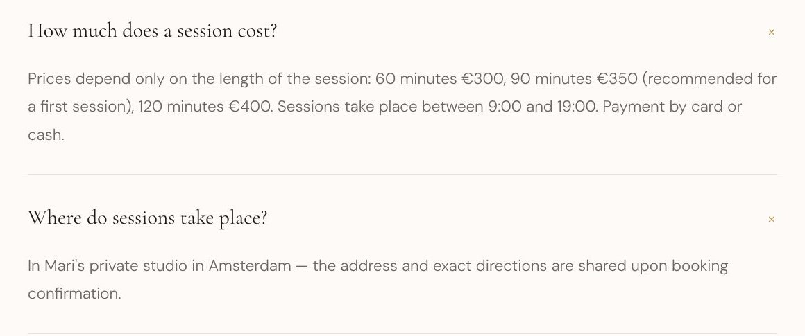
Em destaque, o que foi retirado.
Nos anúncios do Google também: tiramos os títulos "Full Body Massage aan Huis" e "Lichaamsmassage op Locatie" e as palavras-chave de massagem em casa e no hotel. Além disso, quem procura "massagem em casa" ou "massagem no hotel" não vê mais o seu anúncio. Assim você não paga por clique de quem quer um serviço que você não oferece.
"Também tem essa informação aqui que não existe."
Saiu o bloco "What to expect on the day" inteiro, com as datas (10/01 e 14/02/2027), o tamanho do grupo e os preços de inscrição antecipada. Também tiramos a pergunta "When is the workshop?". Vale para inglês e holandês.
Antes · bloco removido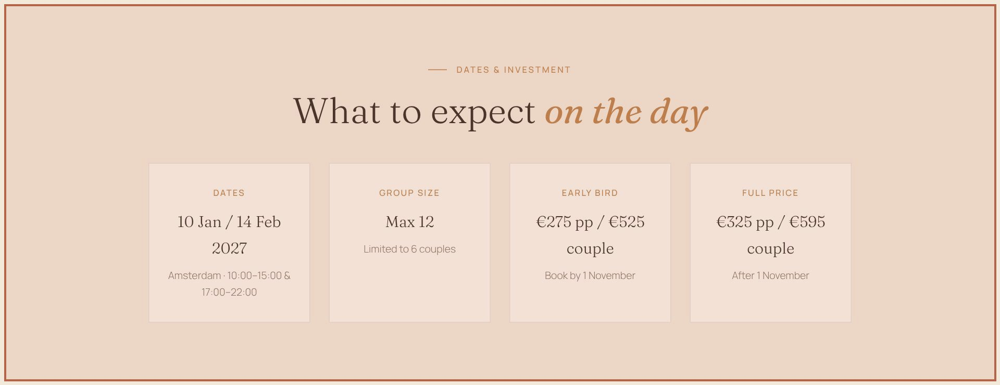
Depois · a página segue direto para "Everyone is welcome"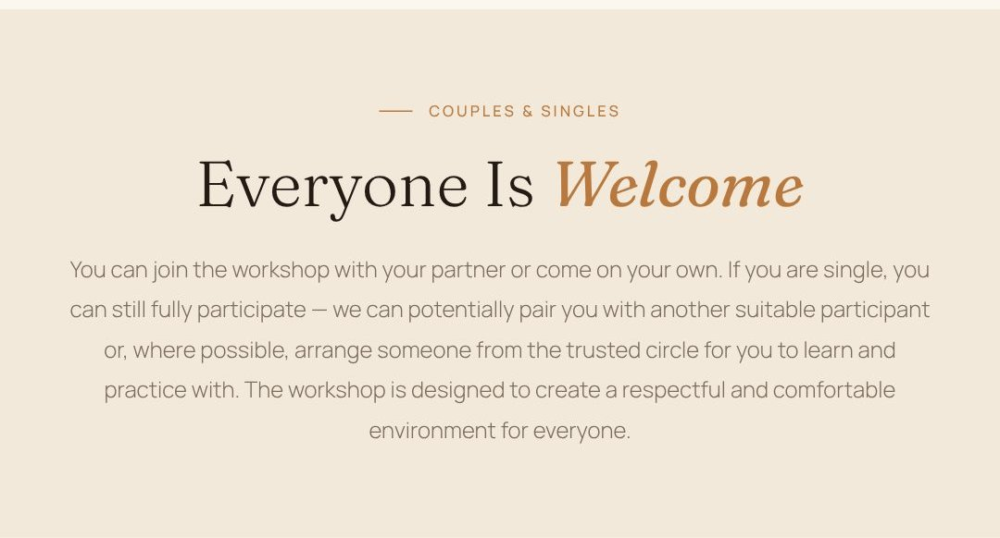
Quando houver uma data real de workshop, é só nos mandar: dia, horário, número de vagas e valor.
As páginas de massagem voltaram a usar os nomes com "Tantric": Tantric Energy Experience, Tantric Holistic Relaxation e, na página de casais, Tantric Couple Therapy. O nome aparece no topo da página, na aba do navegador, na seção de preços e na mensagem que o cliente manda pelo WhatsApp.
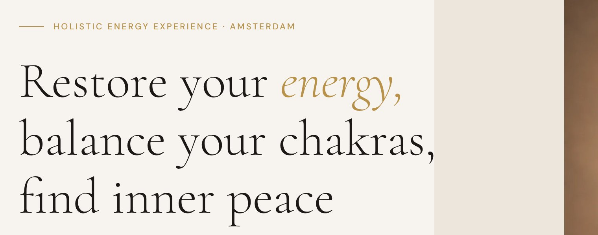
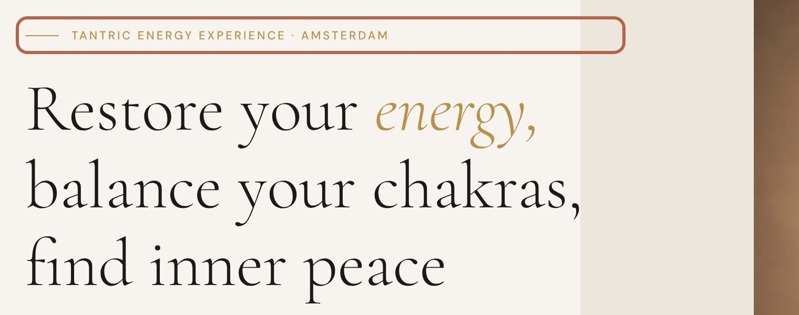
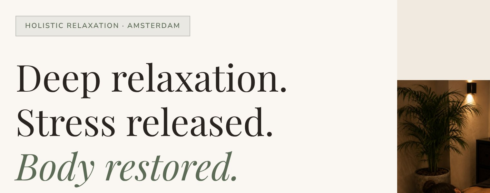
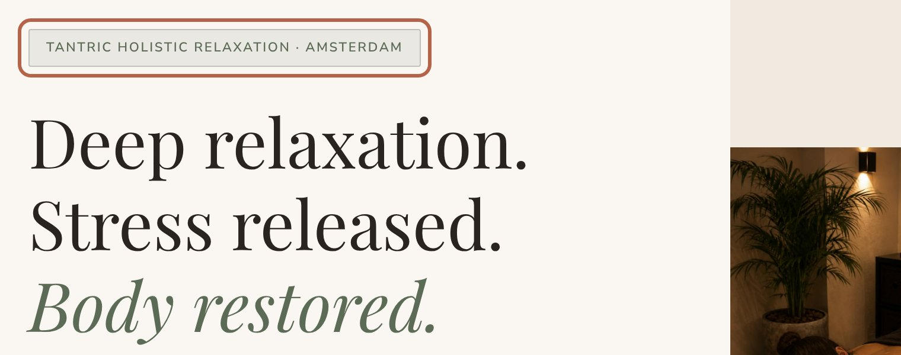
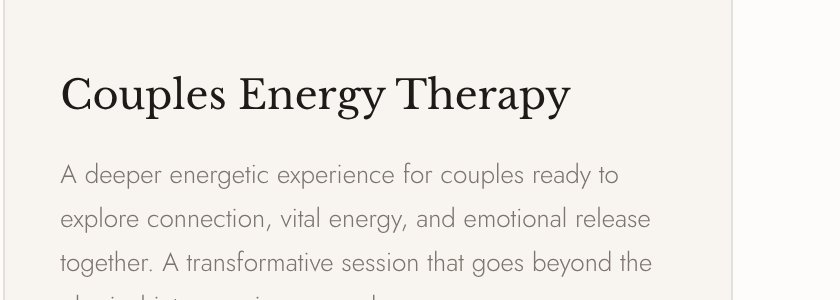
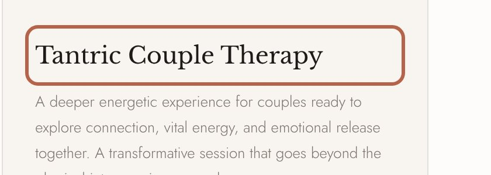
O que vamos acompanhar: em outubro o Google reprovou um anúncio logo depois de uma mudança parecida nas páginas. Nos próximos dias vamos olhar todo dia se os anúncios continuam aprovados. Se algum for reprovado, pedimos uma nova revisão na hora.
| O quê | Por quê |
|---|---|
| Mandar o link de avaliação para cada cliente depois da sessão | Mais avaliações no Google aumentam a confiança de quem chega pelo anúncio |
| Continuar mandando o número diário de mensagens e de atendimentos | É assim que medimos se as mudanças trouxeram mais agendamentos |
| Avisar se tiver data de workshop | Para colocar de volta na página só informação real |